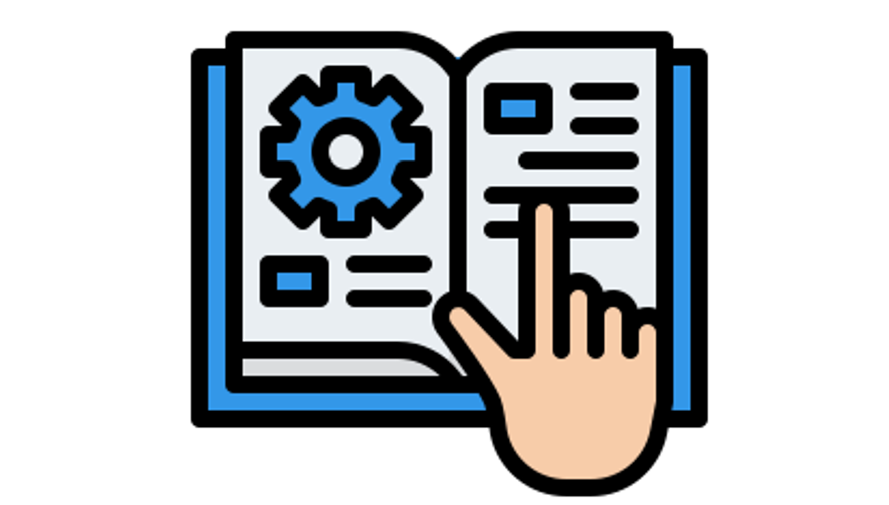

Manuel technique d'installation
Description
Ce projet consistait à mettre en place différents types d'installations. Étape par étape, nous avons installé une machine virtuelle Debian sans interface. Dans celle-ci, nous avons installé Apache2, PHP, PHPPgAdmin et PostgreSQL. Nous avons vérifié leur fonctionnement en mettant en place des connexions exterieures et en revenant sur nos machines pour accéder à leur site web. Tout au long de nos nombreuses manipulations, j'ai pris des notes et des captures d'écran pour pouvoir à la fin écrire un rapport. Ce rapport était à rédiger en anglais pour expliquer précisément tout le processus des différentes installations pour quelqu'un de novice.
Organisation
Étant seule sur le projet, j'ai organisé mes fichiers de commandes ainsi que mes captures d'écran. J'ai pris le temps de réaliser toutes les installations en détaillant chaque étape. Enfin, j'ai rédigé le rapport de commandes avec un langage simple pour la compréhension de tous.
Compétences acquises
J'ai approfondi l'installation d'une machine virtuelle Debian et de logiciels tels qu'Apache2, PHP, PHPPgAdmin et PostgreSQL. J'ai appris à écrire un manuel technique d'installation. Ce rapport m'a permis de vérifier ma compréhension sur toutes les étapes de ce projet et il m'a également permis d'apprendre à expliquer simplement des installations techniques.
Accès au projet
Conclusion
Ce projet réseau m'a permis d'améliorer les compétences que j'avais acquises lors de mon premier projet Debian.